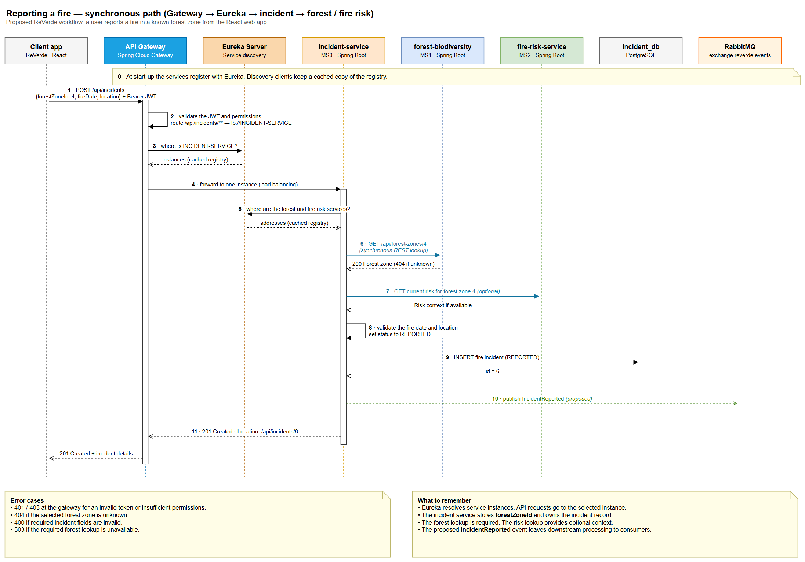

Synchronous communication (REST)
Proposed sequence for reporting a fire in a known forest zone. The incident service looks up the selected zone before saving the new incident.

Diagram toolbar: zoom, change page, full screen. The pencil opens an editable copy in diagrams.net. Without an Internet connection, the PNG image is shown instead.
The steps
Synchronous path (1 → 11)
- The React client sends
POST /api/incidentswith a bearer JWT andforestZoneId. - The gateway validates the JWT and routes the request.
- The incident service checks the forest zone through the forest service API.
- The service can fetch optional risk context. It then saves the incident with
REPORTEDstatus and returns201 Created. The diagram also shows a proposedIncidentReportedpublication.
Error cases
401or403when the token or permissions fail validation.404when the selected forest zone cannot be found.
Workflows for the other modules
The workflows below use proposed API routes, events and integrations. The editable file includes one page per workflow.
| Module | Workflow | Diagram |
|---|---|---|
| Forest & biodiversity | Record a biodiversity observation | PNG · Draw.io page 7 |
| Fire risk & weather | Calculate fire risk for a forest zone | PNG · Draw.io page 9 |
| Reforestation & recovery | Create a recovery project from a fire incident | PNG · Draw.io page 11 |
| Volunteer management | Register a volunteer for an activity | PNG · Draw.io page 13 |
| Equipment & resources | Allocate equipment to a recovery project | PNG · Draw.io page 15 |